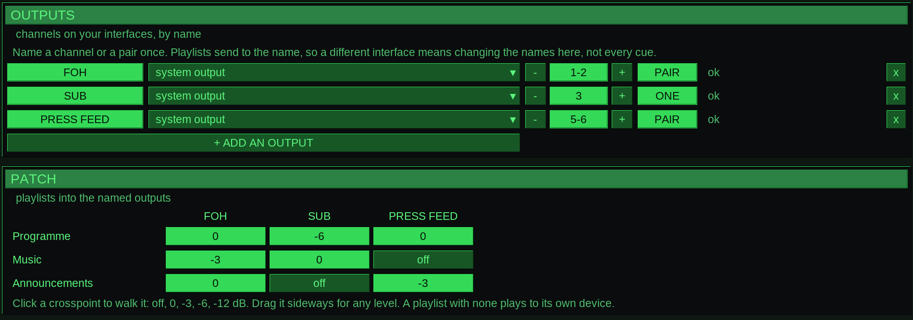
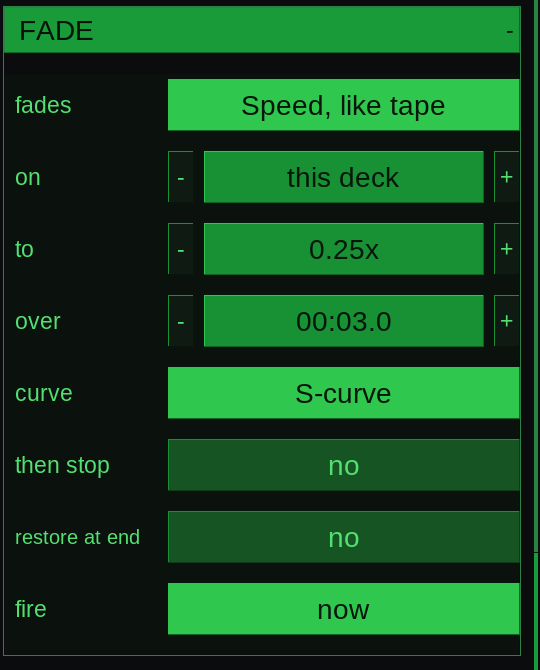
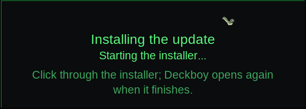
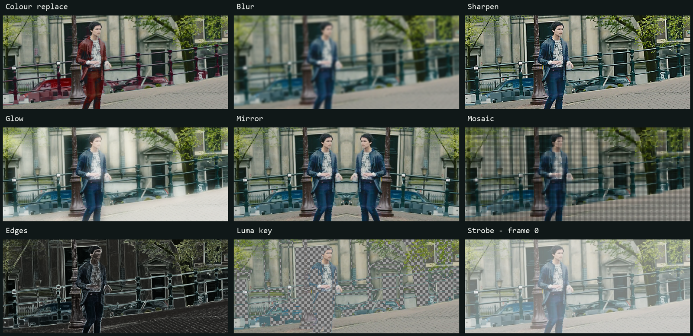

What Deckboy does
The long version. It is long because the cue list absorbs so much, but it is all one object with one set of controls. Back to the front page
Everything is a cue
This is the whole idea, and everything below is a consequence of it. A video file, a still, a slide, a PDF, a live camera, a window on the machine, a web page, an NDI source, an SRT or RTMP feed, an SDI input off a Blackmagic card, a shared texture from Resolume or TouchDesigner, a test card, a countdown clock that can sit over the programme, a lower third (52 looks, one of them straight out of an arcade), an audio file, a line-up tone, a video synth, and an expression you type while it is on the screen — in Deckboy every one of those is the same kind of object, on the same list, under the same spacebar.
Same transport. Same trim and fades. Same seventeen transitions. Same effect rack. Same Stream Deck button, the same OSC verb, the same line of Companion. Recorded the same way on the way out. So a show can run
VIDEO → SLIDE → LIVE CAMERA → WEB PAGE → SRT FEED → TEST CARD → VIDEO
with one operator and no alt-tab, because none of those is a special case. The usual way to do that is a media player, a slide program, a browser, a capture utility, a streaming tool and a pattern generator — six applications, six ideas of what happens when you press play, and a projector that shows the seams between them.
The other half of the same idea: every destination is one kind of object too. A screen, NDI, SRT, RTMP, Blackmagic SDI, SMPTE ST 2110, a recording — several at once, each with its own warp, feather and area of interest. Which is also why the same machine is a converter, a bridge and a test generator on the day: if a camera is a cue and SDI is an output, that is already what it does.
Anything that can make a picture or a sound becomes a cue. Anything that needs to receive the show becomes an output. The full table of cue types →
Current release: v0.99.422. Packaged builds and their changes are on the releases page.
Video, cued
A playlist of clips that go to air when you say so. Drag media in, trim it, fade it, loop it, hold the last frame rather than reveal a desktop. Seventeen ways to get from one cue to the next — cut, crossfade, dip through black or white, pushes, wipes, an iris and four procedural styles — set for the deck and overridden on any cue that wants its own. Hardware decoding, frame-accurate transport, and a cue that knows how long it has left. Then a rack of pixel effects on the live picture, every parameter drivable from an oscillator, because sometimes the brief is “can it look a bit broken, but on purpose”.
Transitions keep each cue's fit, crop, geometry and processed look. On a crowded desk, compact rows keep names and timers readable; tabs give the focused deck the full width when several comfortable columns cannot fit.
Captions made here. A clip with no subtitles gets them from its own sound, written beside it and switched on, in English or any language, with nothing leaving the machine. A file with a second sound track — another language, a commentary — lets you choose which one plays, even while it is on air. And live captions put what is being said on screen about two seconds after it is said, from a stage mic or the programme, made on this computer too.
Out to the whole rig
SRT and RTMP streams, Blackmagic SDI and SMPTE ST 2110, each output with its own area of interest, edge feather and warp. The same programme can go to several outputs while it records, and presenter view takes an output of its own. Uncompressed IP video is normally the preserve of equipment that arrives with a quotation attached.
NDI is in every download, in and out: send any output as an NDI source on the network, or take someone else’s NDI source in as a cue. The NDI runtime comes from your own NDI Tools install, so nothing is bundled that is not ours to give.
MediaMTX works both ways: its streams show up as one-click stream cues, and the programme publishes to it for any number of viewers in a browser, vMix or a recorder.
Each output can show a different deck: one screen carries the programme while another plays something else entirely, from the same machine and the same show file. Layers composite on an output, each with a corner pin of its own, so one projector can map several surfaces. Drag a layer's four corners on the programme monitor, and perspective keeps a flat board flat, its far end properly smaller, instead of folding it along the diagonal.
A multiview you lay out yourself — any window showing the programme or any playlist, with safe areas and its own meter — and a monitor of your own: one playlist on your headphones while the room hears the show.
Programme meters show momentary, short-term and integrated LUFS and true peak. Choose −16, −23 or −24 LUFS when normalising files before playout.
Name the outputs. Patch the playlists.
OUTPUTS in Settings > Audio gives a channel or a pair a name: FOH on 1–2, SUB on 3, PRESS FEED on 5–6. The PATCH below sends each playlist to those names, with a level at every crosspoint. Change the interface once in OUTPUTS and the playlists keep their destinations.



Your plugins and instruments
Deckboy hosts VST3 effects and instruments inside a cue's audio chain, beside its own effects, in whatever order you put them — the reverb you already own, the channel strip your mix is built around. Instruments play from the computer keyboard, a MIDI keyboard or a controller over the network. Four of the plugin's parameters sit on the rows beneath it under the plugin's own names for them, and everything else it was set to is saved in the show.
They open when a cue is prepared, never between two buffers, and one that cannot keep up with its block is taken out of the chain and reported rather than clicking through the PA. A show that opens on a machine missing a plugin keeps the slot, the settings and the name, and says which one it cannot find.
A window, or a web page, as a cue
Point a cue at any window on the machine — a score bug, a timer, a rehearsal tool, a spreadsheet somebody insists on — and it arrives at the window’s own full resolution whatever your display scaling is set to, scaled to fit the frame. It follows the window as it moves and resizes, and anything in front of it stays out of shot.
Point one at a URL instead and the page renders inside the programme, not in a browser window on your desktop. A dashboard, a lyric page or a live scoreboard is a cue like any other, with the same fades, the same effects and the same take button.
Slides, as cues
A PDF, PowerPoint or Keynote deck imports as one cue per slide, speaker notes and all, rendered once on the way in so nothing during the show depends on a document program. Presenter view is an output type in its own right — live slide, the one before, the one after, the notes, the clock — and so is a mirrored teleprompter that scrolls at a pace you set. Most cue players do not do slides. At all. The usual alternative is somebody’s laptop, a long cable and a prayer.
A cat accompanies slide rendering, with measured page progress as the slides arrive. Once imported, a slide keeps its chosen fit and crop through the same transitions as any other cue.
Run it like a theatre desk
A running order with a standby kept apart from what you are looking at, so clicking a cue to check it never changes what the next GO does. Pre-wait, post-wait and continue lay a sequence out in time from one press; a disarmed cue stays in the list and is stepped over tonight. Audition a cue on the preview while the room keeps watching the show, and preload the next one so it starts with no spin-up.
Cues that play nothing and do something: start, stop or fade another cue (or stop every deck at once), fire a cue on several playlists at once, send MIDI or MIDI Show Control, OSC, UDP or TCP, set lights from the fixture patch by name and colour over Art-Net or sACN (and dip them by themselves while a video rolls), or run a script of Deckboy's own commands. Master cues lay out as a tracker — steps down the page, playlists across it. Presets store the whole desk and bring back all of it or only the parts you name. And one button, CHECK, lists everything wrong with the show before doors rather than at the take; pick a line and it takes you there.
Sequences on DASH buttons run several commands in order, with timed waits or a manual GO between them. The tile shows its current step and progress, and Companion can fire the same tile. TAKE ALL takes the selected cue on every playlist at once, from the bottom bar or Ctrl+Enter.
Triggers on any cue — a hotkey, a MIDI note, an OSC address, a time of day or a timecode point — fire it through the same take as GO. A memo cue is a note in the running order, and devamp lets a looping cue finish its pass and move on.
CLEAR immediately stops every deck, cancels queued takes, drops held pictures and overlays, and disarms output.
Web Monitor puts programme picture and stereo sound in a browser, or the multiview, a presenter view or any other output. Screens watching together stay in step, Low latency sends the picture alone, and a QR code opens it on a phone. Press SOUND ON to listen.
Phone control puts TAKE, the transport, fader, cue list, editable DASH, tracker and show controls on one page. Scan to pair or connect with the passphrase. BLACKOUT and REC use a hold gesture. With Tailscale on both devices, the controller also works from outside the local network.
Slow it down, like tape.
A fade cue can move the playing cue’s speed. Choose Speed, like tape, set the destination and the time, and fire it from the running order. Picture and sound slow together; pitch follows the speed.



Free, and nothing phones home
No account. No dongle. No licence server, no seat count, no trial that expires on the morning of the gig. GPL-3.0, free for good — which is a reliability argument as much as a principle, because a licence check is one more thing that can refuse to start a show at 19:55, in a venue whose wi-fi would first like you to accept its terms and conditions. No telemetry either. Deckboy has never needed the network to play a file. Networking serves the sources, outputs and controls you enable, plus an optional update check.
Install, then carry on.
INSTALL & RESTART hands the downloaded update to the installer. A card shows what is happening while it starts; Deckboy opens again when the installation finishes.


52 video effects, 23 audio, 5 you cannot get anywhere else
A per-cue rack on the live picture — displacement, feedback, reaction–diffusion,
pixel sort, datamosh, Chladni plates, schlieren that makes the picture's gradients visible,
and levels and curves first in the list for the grade every operator reaches for
— with every parameter drivable from an oscillator, and the picture's size,
position, rotation and crop too. Measure the frame cost on your own machine with --effect-bench.
Keying, grading and picture effects apply as soon as you change them, on a playing or paused cue, without another TAKE. The generated Swirl has live palettes, colour bands, reverse speed, twist, flow, zoom and a movable centre; a code source has its own render width and height independently of its placement on the output.


Then the five only Deckboy has, because they need the picture and the sound in one object and a plug-in only ever gets samples: Picture (the video drives the filter), Placement (where the shot sits on the raster is where it sits in the room), Seam (the end of the cue resolves the tail), Frame lock (stutter quantised to the frame period) and Suspend (a held cue keeps its room tone). How it holds the frame budget.